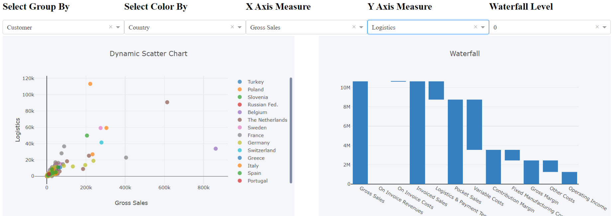
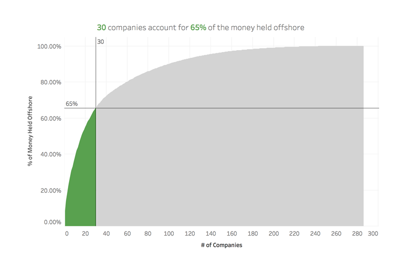

Passionate Business & Data Science Analyst actively looking an internship role for summer 2020. Dedicated and eager to learn Analyst with 4 years of work experience in B2B Retail, Pricing, Promo Advisory and Customer Analysis. Developed business intelligence solutions for clients using Machine Learning Algorithms and Data Visualization.
Developed complex interactive dashboards in Tableau, Python (dash) & Excel for B2B clients which helped them in making key decisions about their business processes
Built Promotion Advisory Solution for clients to get insights about their past promotions and to recommend future promotions. Used different key metrics like ROI, Volume Lift, Cannibalization and Forward Buying Effect etc. for analysis.
Helped clients in identifying key metrics like margin leakage, variability, and pricing opportunities through dashboards like Pocket Price Waterfall, Pareto, Network graphs.
Built ETL processes modeling using tools like Alteryx, EXASOL and Python to automate the whole data refresh process
Collaborated with Senior Experts, Engagement Managers and Partners to problem solve the challenges and to provide best possible solution.
Developed Pricing Application Solution (Periscope) for clients such that client’s sales representatives can set the new price for the product and get the approval from their managers.
Built automation tools using Advanced Excel VBA (Visual Basic Application), Python and Alteryx which helped to reduce the process time by 70% and minimized manual errors.
Travelled to different onsite client locations to work directly with clients, get their requirements, problem solve with them on issues and get feedback on the developed solution.
Worked for the world's largest Retailer Giant in improving and optimizing the performance of stores by reducing queue length, waiting time and scan time at the checkout counters.
Used Data Mining task i.e. "K-Means clustering" in R-Studio to identify the similar stores for Pre vs. Post comparison
Used “Association Rule Mining" technique to identify the ideal basket size and to recommend products to customers .
Statistical and Customer Segmentation Analysis based on the customer demographic, household and spend.
Prepared and presented PowerPoint presentations and reports in to the clients with the key insights & next steps.
GPA: 4.0/4.0
GPA: 9.0/10.0
MNIST is a dataset of 60,000 small squared 28x28 pixel grayscale images of handwritten sigle digits between 0 to 9.
The objective of the project was to build a convolutional dense model using Python Keras and Tensorflow libraries such that the model can predict the handwritten number of the incoming new images with high accuracy.
Steps performed includes - Train-Test split of the dataset; scaling of the Train images; using Dense, Conv2D and MaxPool2D layers; prediction on Test images; and evaluation of the model.
Source code in Python can be found here
The objective of the project was to build an interactive Scatter plot and Waterfall chart in Python Dash such that user can select the x-axis, y-axis, group by and color by attributes to build the scatter chart as per the requirement.
Additional feature added to the visualization was the explorer functionality such that when user select any points in the scatter chart, the waterfall chart would get filtered out only for those selected points.
Source code in Python can be found here
Performed K-means and Hierarchial Clustering in R using Wine and Protein data from the UCI archive.
K-means and Hierarchial Clustering is a unsupervised learning method which is used to group similar types of data points together. In K-means, grouping is based on the mean distnace between the points. The distance metric could be Euclidean or Manhattan distance etc.
For this project, function "SimpleKMeans" from package "RWeka" is being used to perform Clustering Analysis
Source code in R can be found here
Pareto chart is based on the theory of “80-20” phenomena, where it means that 80% of the output is being generated by the 20% of the input.
Pareto chart is a combination of both bar and line graph in which bars are arranged in the descending order and line in the ascending cumulative total.
In this project,a pareto chart was created in tableau to verify how many Products were actually contributing to the major propotion of Sales (say 80%) of a company.
Source tableau workbook can be found here
Apart from being a Data Analyst, I enjoy most of my time being outdoors. In the winter, I am an avid skier. During the warmer months, I enjoy trekking and playng Volley Ball.
When forced indoors, I like to read novels, cook different cuisine and follow a number of sci-fi and fantasy genre movies and television shows.